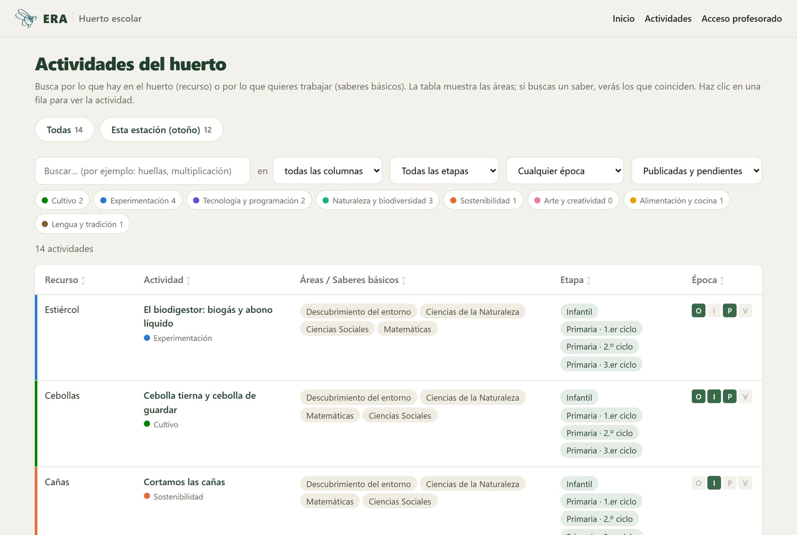

ERA: the classroom in the garden, the garden in the classroom
ERA (Espacio de Recursos y Actividades) is a website where teachers find, plan and share school garden activities, linked to the basic knowledge of the Aragon infant and primary curriculum.
It was born as a resource for a training course for the teachers of CEIP de Olba, run through the Ángel Sanz Briz Teacher Training Centre in Teruel.
Screenshots
-

-

-

The training
A training course for the staff of CEIP de Olba on how to take the classroom to the garden and the garden to the classroom: using the school garden to work on every subject, not just for sowing and watering.
ERA gathers the material so that teachers have it at hand, can add to it and can share it with other schools.
What's in ERA
-
Activities linked to the curriculum
- Each sheet with description, materials, steps and safety notes
- For each stage, its adaptation and the basic knowledge of the Aragon curriculum
- Search by resource, by subject, by stage or by time of year
-
More than growing
- Experiments: the biodigester, soil chromatography, compost tea
- Technology: weather station and automatic watering with micro:bit
- Nature, cooking and tradition: indicator plants, chard pasties, garden sayings
-
Plans
- The garden programme for a stage on a calendar, for a month, a term or the whole year
- Season and stage warnings, and the balance between categories and subjects
- Private, or shared with the teachers you choose
-
Built by the whole staff
- Any teacher with an account can propose activities, with photos and downloadable sheets
- A reviewer approves them before they are published
Free and open
The activities can be used, adapted and shared under the CC BY-SA 4.0 licence, and the website code is free software (AGPL-3.0).
Built with HTML, CSS and JavaScript, with no dependencies, and Firebase for the data and teacher accounts.
If you'd like a training course like this for your school, or an activity bank for your project, let's talk.